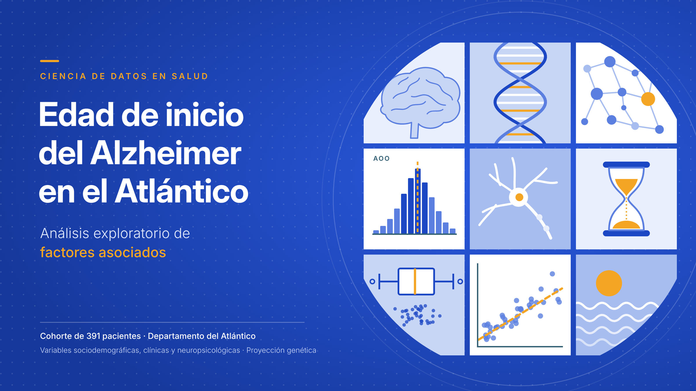

Contexto#
La enfermedad de Alzheimer es la causa más frecuente de demencia. Aunque suele manifestarse en edades avanzadas, la edad a la que aparecen los primeros síntomas varía de forma considerable entre pacientes. Esa variabilidad puede estar relacionada con características sociodemográficas, con la historia clínica de cada persona y con factores genéticos capaces de adelantar o retrasar el inicio de la enfermedad.
Este proyecto estudia una cohorte de 391 pacientes con enfermedad de Alzheimer del departamento del Atlántico con historia clínico-genética reconstruida. Antes de incorporar la información de variantes genéticas, es necesario describir la cohorte con rigor, evaluar la calidad de los datos disponibles y explorar qué características sociodemográficas, clínicas y neuropsicológicas se asocian con la edad de inicio (AOO). Este análisis exploratorio constituye esa base.
Objetivo general#
Caracterizar de manera integral la cohorte de pacientes con enfermedad de Alzheimer del Atlántico y explorar la relación entre sus características sociodemográficas, clínicas y neuropsicológicas y la edad de inicio de la enfermedad (AOO, Age of Onset), con el propósito de identificar variables potencialmente asociadas con un inicio más temprano o más tardío y establecer una base analítica rigurosa para la posterior incorporación de información genética.
El análisis busca, además, evaluar la calidad, completitud, consistencia, distribución y redundancia de las variables disponibles antes de avanzar hacia análisis multivariados y estudios de asociación genética.
Pregunta orientadora#
¿Qué características sociodemográficas, clínicas y neuropsicológicas presentan asociación con una edad de inicio más temprana o más tardía de la enfermedad de Alzheimer en la cohorte estudiada?
Esta pregunta constituye la etapa clínica y exploratoria del estudio. En una fase posterior se incorporarán las variantes genéticas con el propósito de evaluar su posible papel como modificadores de la edad de inicio.
Fuentes de información#
El análisis integra tres fuentes de datos complementarias:
hxgen.xlsx: información clínica, antecedentes, hábitos, historia familiar y variables relacionadas con la reconstrucción del perfil clínico-genético.neuropsicologia-casos.xlsx: información sociodemográfica, clínica y resultados de pruebas neuropsicológicas, incluyendo las variables utilizadas para reconstruir la edad de inicio.moca.xlsx: resultados de la prueba Montreal Cognitive Assessment (MoCA).
La población de referencia del análisis corresponde a 391 pacientes con historia clínico-genética reconstruida, definidos a partir de hxgen.xlsx.
Decisiones metodológicas#
Cohorte maestra.
hxgen.xlsxse utiliza como fuente maestra debido a que contiene los 391 pacientes con perfil clínico-genético reconstruido que delimitan la cohorte de interés. Las demás fuentes se integran sobre estos pacientes sin ampliar artificialmente la población de estudio.Integración de las fuentes. La información de
neuropsicologia-casos.xlsxymoca.xlsxse incorpora mediante el identificador del paciente, preservando los 391 individuos de la cohorte maestra. La disponibilidad de información complementaria puede variar entre pacientes, por lo que se documenta el tamaño efectivo de muestra utilizado en cada análisis.Variable principal de estudio. La edad de inicio de la enfermedad de Alzheimer (AOO) constituye la variable de respuesta principal. Se construye de manera trazable a partir de las variables de edad de inicio disponibles en la fuente neuropsicológica, utilizando la edad de inicio original como primera fuente y la edad de inicio actualizada únicamente cuando la primera no se encuentra disponible.
Valores faltantes de AOO. Los pacientes sin una edad de inicio documentada se conservan dentro de la cohorte para la caracterización general, pero se excluyen únicamente de los análisis que requieren AOO. La edad de inicio no se imputa, debido a que constituye el desenlace principal de la investigación y su estimación artificial podría introducir sesgos en los análisis posteriores.
Dos conjuntos analíticos.
base_full: contiene la cohorte completa de 391 pacientes y se utiliza para describir las características generales de la población y evaluar la calidad de los datos.base_aoo: contiene temporalmente a los pacientes con AOO disponible y se utiliza para los análisis de asociación con la edad de inicio.
Datos faltantes en covariables. Durante el EDA se cuantifica y caracteriza la ausencia de información, pero no se realiza imputación definitiva de covariables. Si posteriormente se desarrolla un modelo predictivo o multivariado que requiera imputación, sus parámetros deberán estimarse exclusivamente a partir de los datos de entrenamiento para evitar data leakage.
Variables neuropsicológicas. El conjunto completo de pruebas neuropsicológicas se examina inicialmente para evaluar completitud, variabilidad, distribución y redundancia. Debido al elevado número de medidas y a la correlación entre pruebas que evalúan dominios similares, se realiza una reducción justificada evitando incorporar información redundante.
Variables neuropsicológicas prioritarias. MMSE, MoCA y FAST se conservan como indicadores clínicos de especial interés para la caracterización cognitiva y funcional. Otras pruebas pueden seleccionarse como representantes de dominios neuropsicológicos cuando presenten adecuada calidad, variabilidad, relevancia clínica y baja redundancia.
Temporalidad y riesgo de
data leakage. Varias variables clínicas y neuropsicológicas pudieron haber sido medidas después del inicio de la enfermedad. Por esta razón, una asociación con AOO no implica necesariamente que la variable haya precedido o modificado el inicio de la enfermedad. El riesgo de temporalidad se documenta explícitamente y condiciona la interpretación de los resultados.Análisis de asociación. Los análisis bivariados se realizan utilizando los casos con información disponible para cada par de variables, sin imputar AOO. Se emplean métodos estadísticos acordes con la naturaleza y distribución de cada variable y se controla el problema de comparaciones múltiples cuando se evalúan numerosas asociaciones simultáneamente.
Alcance exploratorio. Los resultados obtenidos en esta etapa representan asociaciones estadísticas y patrones descriptivos de la cohorte. No se interpretan como relaciones causales ni como evidencia definitiva de factores protectores o de riesgo.
Proyección genética. Esta etapa constituye la preparación clínica y fenotípica para el análisis genético posterior. Una vez incorporada y sometida a control de calidad la información de variantes genéticas, se evaluará su asociación con AOO con el objetivo de identificar posibles modificadores genéticos relacionados con un inicio más temprano o más tardío de la enfermedad.